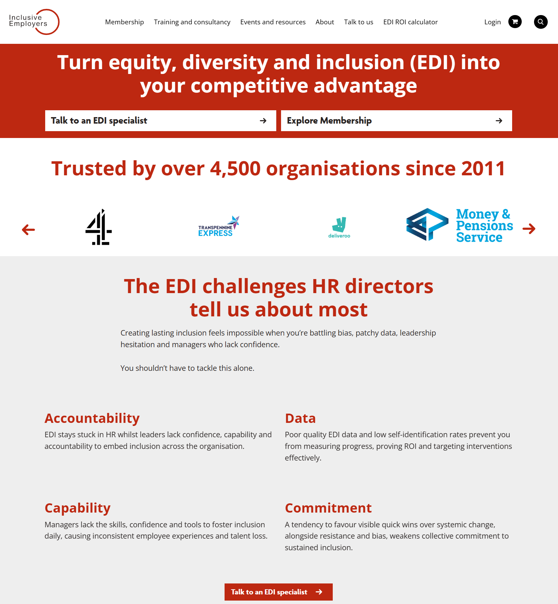

We're mapping what HR and people leaders across the UK are thinking, prioritising, and planning for in 2026 — and how the inclusion landscape is evolving.
Takes around 5 minutes to complete
Your responses are completely anonymous
Findings will be published as a free sector-wide report
Opt in at the end to receive a summary of the findings
Thank you for your time.
Section 1 of 9 — About You
These first few questions help us understand who's responding. All answers are anonymous.
Which of the following best describes your role?
Select one
What is your level of seniority?
Select one
Please answer both questions to continue.
Section 1 of 9 — About You
How involved are you in decisions about spending on inclusion, people development, or related external services?
Select one
How many people does your organisation employ?
Select one
Which best describes your organisation's sector?
Select one
Please answer all questions to continue.
Section 1 of 9 — About You
Which of the following best describes your organisation's area of work?
Select one
Please select an option to continue.
Section 2 of 9 — Your Relationship with Inclusive Employers
Which of the following best describes your organisation's relationship with Inclusive Employers?
Inclusive Employers is a UK-based membership organisation focused on workplace inclusion.
Select one
Please select an option to continue.
Section 3 of 9 — The Name "Inclusive Employers"
We'd like to understand what the name "Inclusive Employers" suggests to people — regardless of whether you know the organisation.
Based solely on the name "Inclusive Employers", which of the following would you expect them to offer?
Select all that apply
Please select at least one option.
Section 3 of 9 — The Name "Inclusive Employers"
To what extent do you agree with the following statement?
"A company called 'Inclusive Employers' could credibly help organisations with broader people strategy and cultural transformation — not just inclusion training and awareness."
To what extent do you agree with the following statement?
"The name 'Inclusive Employers' might put some organisations off, or limit expectations of what the company could help with."
Please answer both questions to continue.
Section 4 of 9 — People Priorities
Now we'd like to understand the bigger picture — what matters most to organisations like yours right now.
What are your organisation's top people priorities for 2026?
Select up to 3 — 0 of 3 selected
Please select at least one priority.
You're halfway through — thank you for sticking with it!
Section 4 of 9 — People Priorities
Compared to 12 months ago, is inclusion and EDI becoming more or less important in your organisation?
In a few words, what's driving that change?
A sentence or two is fine
Please answer the question to continue.
Section 5 of 9 — Budget & Resources
A few questions about how resources and budgets are shaping up.
Over the past 12 months, has your organisation's discretionary budget for external inclusion and people development support...
Over the same period, has your organisation's internal headcount dedicated to inclusion and people development...
Please answer both questions to continue.
Section 5 of 9 — Budget & Resources
What is the main reason for the budget change?
Select one
How much pressure does your organisation face to demonstrate the return on investment (ROI) of inclusion work?
How difficult is it to secure internal approval for spending on inclusion and people development?
Please answer all questions to continue.
Section 6 of 9 — Language & Framing
The language around inclusion is evolving. These questions help us understand what's happening on the ground.
Which of the following terms does your organisation currently use when talking about this area of work?
Select all that apply
Please select at least one option.
Section 6 of 9 — Language & Framing
To what extent do you agree with the following statements?
One answer per row
Please rate all statements to continue.
Nearly done — just a few more questions!
Section 7 of 9 — External Support
A couple of questions about how your organisation prefers to access external support.
When it comes to external support for inclusion and people strategy, which would your organisation prefer?
If you were choosing a membership or ongoing relationship with an inclusion and people strategy partner, which of the following would matter most?
Select up to 3 — 0 of 3 selected
Please answer both questions to continue.
Section 8 of 9 — Inclusive Employers
You mentioned that you're aware of Inclusive Employers. We'd love your thoughts on a few things.
Based on your experience or knowledge of Inclusive Employers, how would you rate them on the following?
One answer per row
Have you ever confused or mixed up Inclusive Employers with another organisation working in this space?
Please complete all questions to continue.
Section 8 of 9 — Inclusive Employers
Take a look at the Inclusive Employers website
Based on what you see below, please rate the following statements.

Tap to enlarge
Based on what you see, how would you rate the following?
One answer per row
Any other thoughts on how Inclusive Employers presents itself visually?
Optional — feel free to skip if you have nothing to add
Please rate all statements to continue.
Section 9 of 9 — Finally
Last couple of questions — you're done after this!
Would you like to receive a free summary of the findings from this research?
Please enter your email address
Your email will only be used to send you the report and will not be linked to your survey responses.
We may host a short discussion session to explore these themes further. Would you be interested in taking part?
Please answer the required questions to continue.
Thank you for taking part
Your responses will help shape a clearer picture of the people and inclusion priorities across UK organisations in 2026.
If you opted in, we'll send you a summary of the findings within the next few weeks.
If you have any questions, please contact Inclusive Employers.